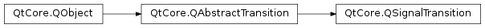

QSignalTransition¶
Note
This class was introduced in Qt 4.6.
Synopsis¶
Functions¶
- def
senderObject() - def
setSenderObject(sender) - def
setSignal(signal) - def
signal()
Detailed Description¶
The
PySide2.QtCore.QSignalTransitionclass provides a transition based on a Qt signal.Typically you would use the overload of
QState.addTransition()that takes a sender and signal as arguments, rather than creatingPySide2.QtCore.QSignalTransitionobjects directly.PySide2.QtCore.QSignalTransitionis part of The State Machine Framework .You can subclass
PySide2.QtCore.QSignalTransitionand reimplementPySide2.QtCore.QSignalTransition.eventTest()to make a signal transition conditional; the event object passed toPySide2.QtCore.QSignalTransition.eventTest()will be aQStateMachine.SignalEventobject. Example:class CheckedTransition : public QSignalTransition { public: CheckedTransition(QCheckBox *check) : QSignalTransition(check, SIGNAL(stateChanged(int))) {} protected: bool eventTest(QEvent *e) { if (!QSignalTransition::eventTest(e)) return false; QStateMachine::SignalEvent *se = static_cast<QStateMachine::SignalEvent*>(e); return (se->arguments().at(0).toInt() == Qt::Checked); } }; ... QCheckBox *check = new QCheckBox(); check->setTristate(true); QState *s1 = new QState(); QState *s2 = new QState(); CheckedTransition *t1 = new CheckedTransition(check); t1->setTargetState(s2); s1->addTransition(t1);
-
class
PySide2.QtCore.QSignalTransition(arg__1[, arg__2=None])¶ -
class
PySide2.QtCore.QSignalTransition([sourceState=nullptr]) -
class
PySide2.QtCore.QSignalTransition(sender, signal[, sourceState=nullptr]) Parameters: - signal – str
- sourceState –
PySide2.QtCore.QState - sender –
PySide2.QtCore.QObject - arg__2 –
PySide2.QtCore.QState - arg__1 –
PyObject
Constructs a new signal transition with the given
sourceState.Constructs a new signal transition associated with the given
signalof the givensender, and with the givensourceState.
-
PySide2.QtCore.QSignalTransition.senderObject()¶ Return type: PySide2.QtCore.QObjectReturns the sender object associated with this signal transition.
-
PySide2.QtCore.QSignalTransition.setSenderObject(sender)¶ Parameters: sender – PySide2.QtCore.QObjectSets the
senderobject associated with this signal transition.
-
PySide2.QtCore.QSignalTransition.setSignal(signal)¶ Parameters: signal – PySide2.QtCore.QByteArraySets the
signalassociated with this signal transition.
-
PySide2.QtCore.QSignalTransition.signal()¶ Return type: PySide2.QtCore.QByteArrayReturns the signal associated with this signal transition.
© 2018 The Qt Company Ltd. Documentation contributions included herein are the copyrights of their respective owners. The documentation provided herein is licensed under the terms of the GNU Free Documentation License version 1.3 as published by the Free Software Foundation. Qt and respective logos are trademarks of The Qt Company Ltd. in Finland and/or other countries worldwide. All other trademarks are property of their respective owners.